Decision-Making is a fundamental topic in the domain of Autonomous Driving where significant challenges must be tackled due to the variable behaviours of surrounding agents and the wide array of encountered scenarios. The primary aim of this work is to develop a hybrid Decision-Making architecture able to be validated on a real vehicle that marries the reliability of classical techniques with the adaptability of Deep Reinforcement Learning approaches. To address the crucial transition from simulated training environments to real-world applications, this research employs a Curriculum Learning approach, facilitated by the deployment of Digital Twins and Parallel Intelligence technologies, significantly narrowing the Reality Gap and enhancing the applicability of learned behaviours. The viability of this approach is evidenced through a Parallel Execution, wherein simulated and real-world tests are conducted simultaneously. Specifically, our approach consistently surpasses the performance benchmarks set by existing frameworks in the literature within SMARTS, achieving success rates over 91%. Additionally, it completes various scenarios in CARLA up to 50% faster than the Autopilot, demonstrating improved comfort and safety.
Lightweight simulation for high-level behaviours learning.
The green agent must merge into the left lane.
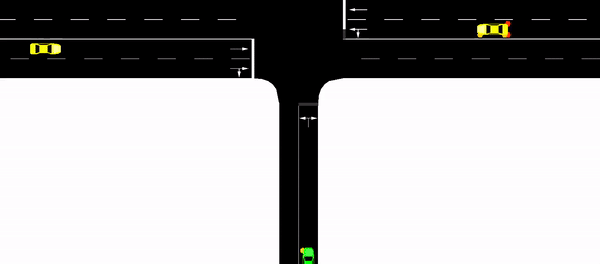
The green agent must merge into the traffic.
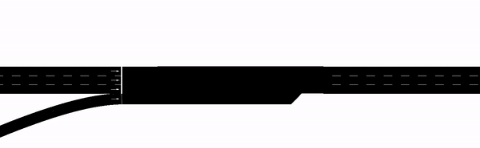
The green agent must reach the end of the road.
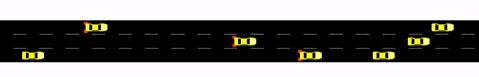
The green agent must merge into the roundabout and leave it in the last exit.
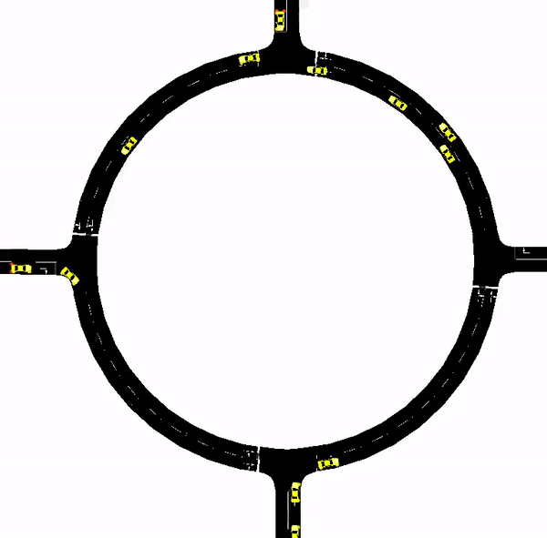
The results in terms of success rate (%) and average completion time (sec). An ablation study between different DRL agents and a comparison to representative SOTA proposals are presented. The training progression of the rewards is also represented.
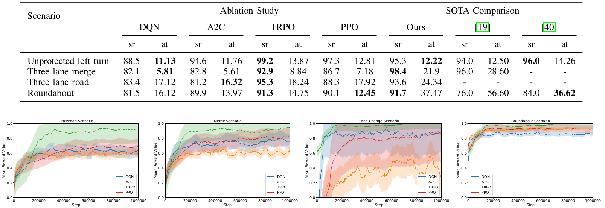
Realistic simulation including vehicle dynamics.
The ego vehicle must cross the intersection while vehicles are coming from both sides.

The ego vehicle stops due to the adversarial vehicles and starts moving when it identifies a gap. The control signals and comfort metrics are represented below.

The ego vehicle must merge into the right lane while vehicles are coming from the left side.

The ego vehicle stops due to the adversarial vehicles and starts moving when it identifies a gap. The control signals and comfort metrics are represented below.

The ego vehicle must drive until the end of the road while vehicles are driving in this road.

The ego vehicle changes lane two times resulting in the shown control signals.

The ego vehicle must merge into the roundabout and leave it in the second exit.

The control signals are represented for the vehicle approaching and merging into the roundabout.

The ego vehicle drives through all the previously introduced scenarios in a concatenated way.

The first chart shows the ego vehicle performance while the second one presents the CARLA Autopilot signals under the same scenario.


The comparison using different metrics between our proposal and the CARLA Autopilot.

Validation of our proposal with a Parallel Execution in a merge scenario in our University Campus using our Real Vehicle.
Front View
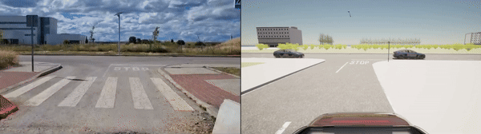
Side View
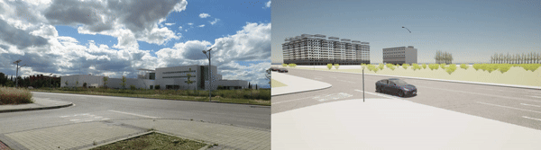
Control Graphics
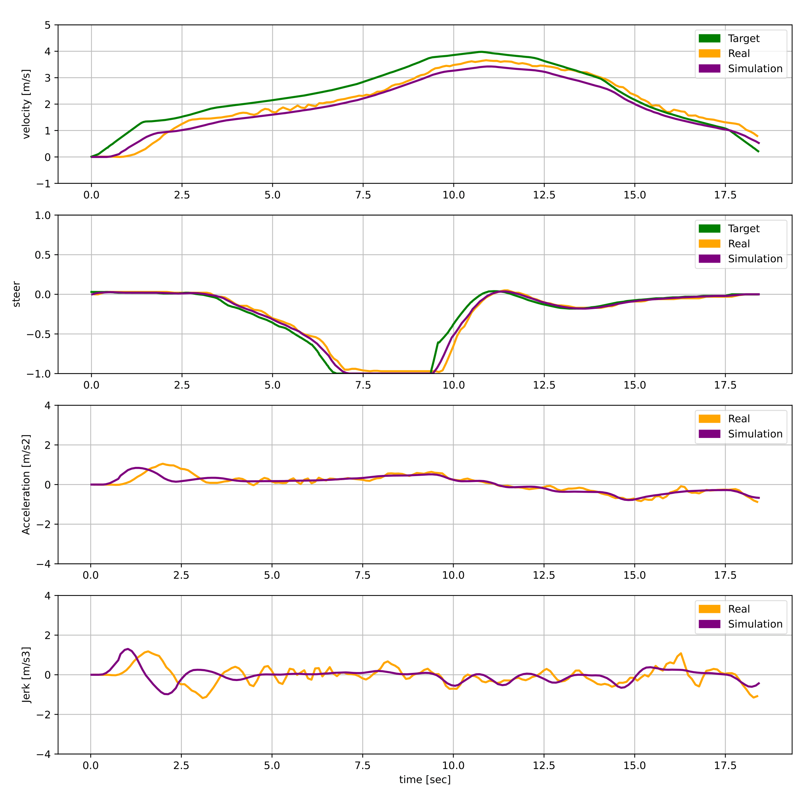
Front View
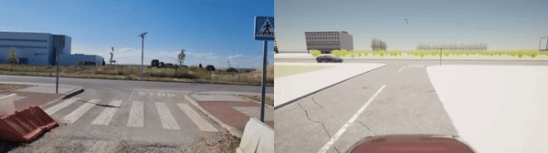
Side View
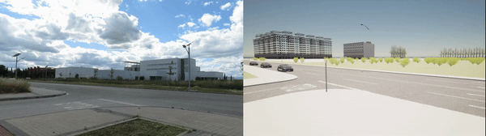
Control Graphics
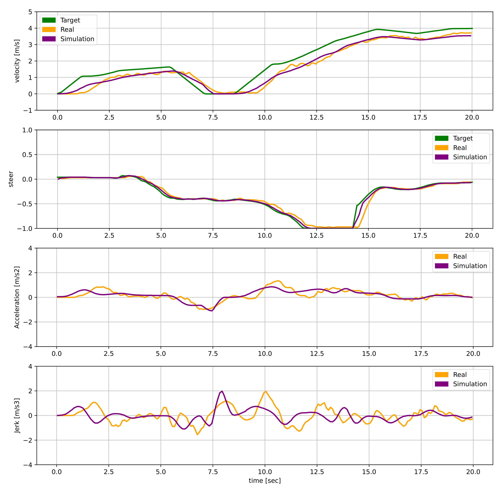
@article{gutierrez2024curricular,
author = {Gutiérrez-Moreno, Rodrigo and Barea, Rafael and López-Guillén, Elena and Arango, Felipe and Sánchez-García, Fabio and Bergasa, Luis Miguel},
title = {A Curriculum Approach to Bridge the Reality Gap in Autonomous Driving Decision-Making based on Deep Reinforcement Learning},
journal = {Sensors},
year = {2026},
}